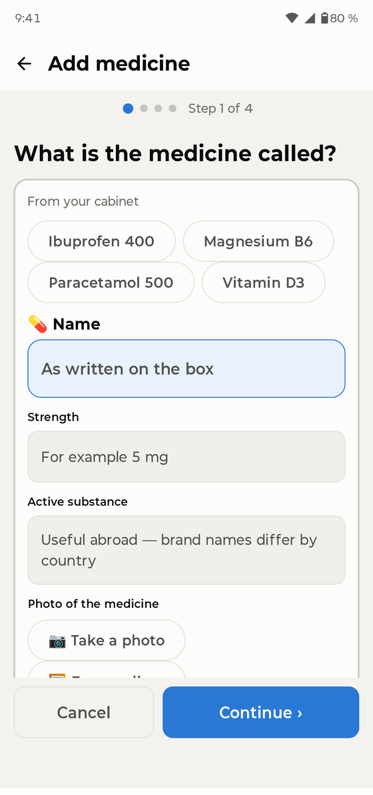
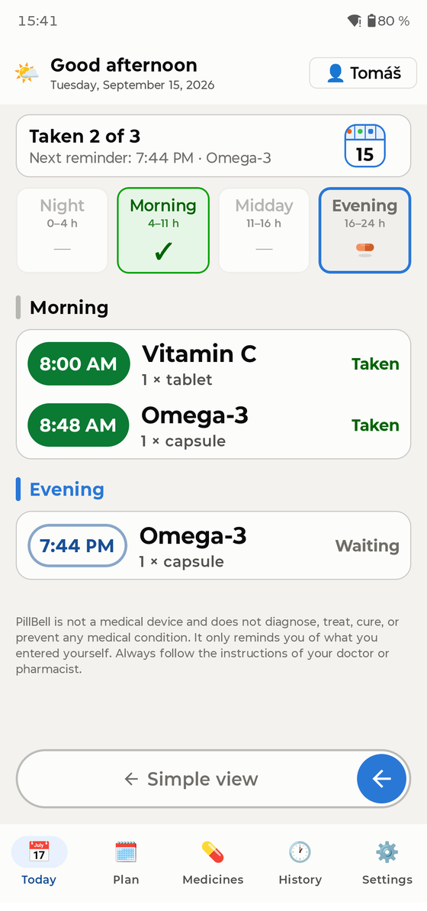
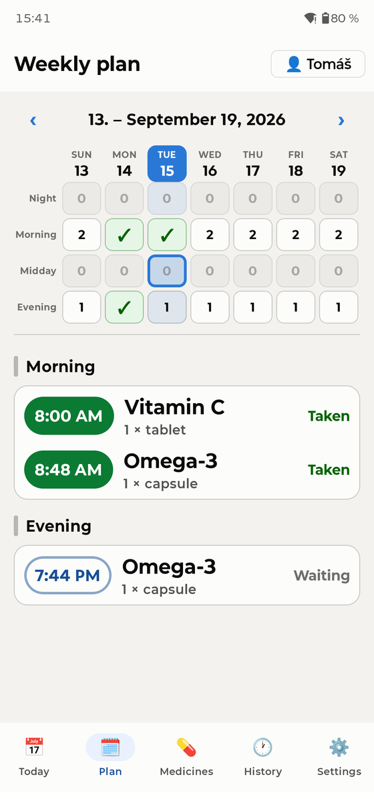
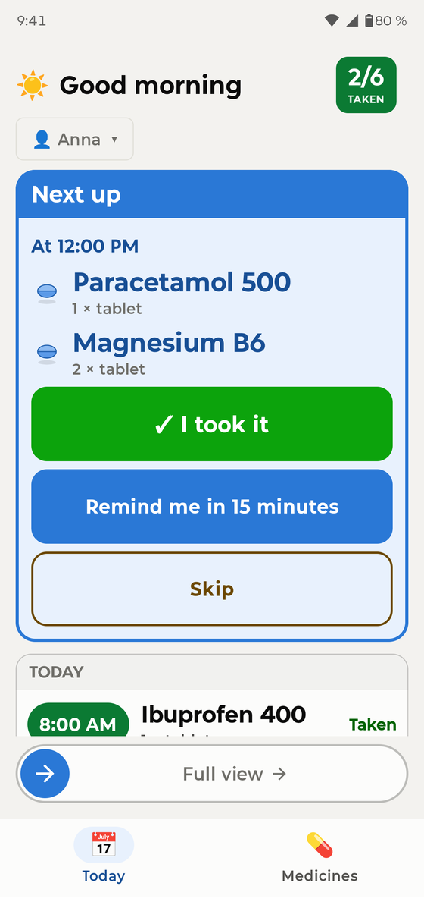
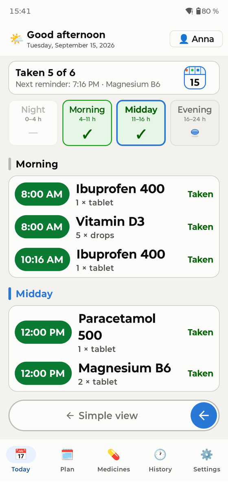
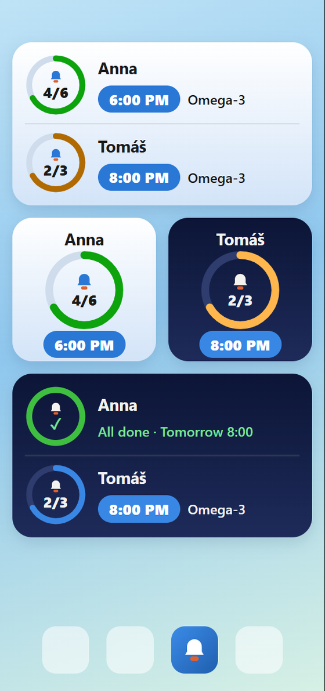
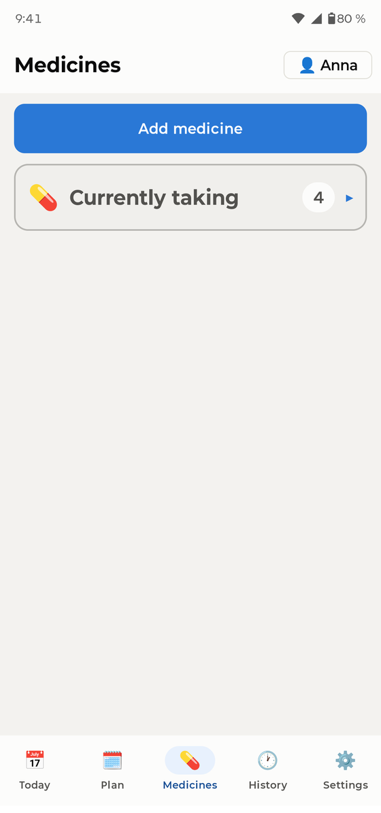
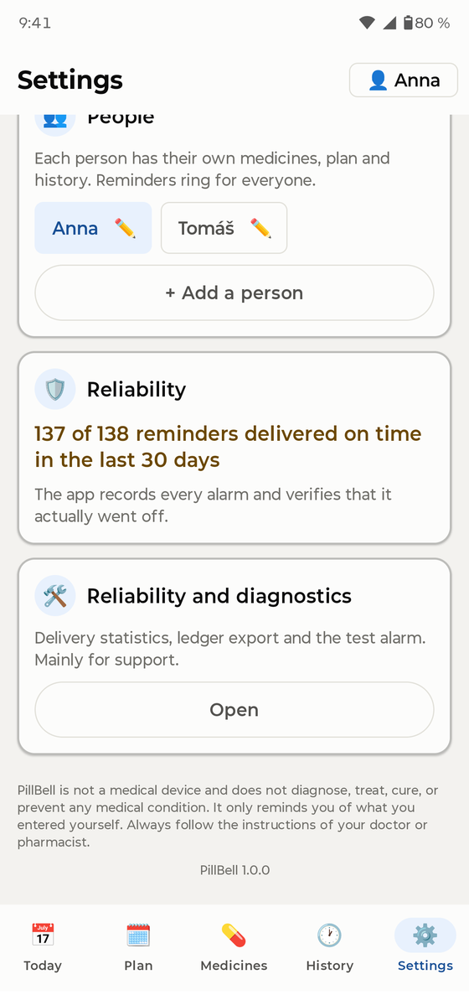

Перший запуск
Під час першого відкриття короткий помічник попросить кілька дозволів. Кожен із них має єдину мету — щоб нагадування справді задзвонило. PillBell не має доступу до інтернету й нічого не збирає:
- Сповіщення — без них жодне нагадування не з'явиться.
- Будильники та нагадування — щоб PillBell дзвонив точно до хвилини.
- Повноекранні нагадування — будильник може засвітити весь екран, як справжній будильник.
- Батарея / фоновий режим — щоб телефон не присипляв PillBell. Помічник покаже кроки саме для вашої марки телефона (Samsung, Xiaomi та інші відрізняються).
- Доступ до «Не турбувати» — нагадування пройде навіть з увімкненим режимом.
Додавання ліків

Перейдіть у Ліки → Додати ліки. Помічник за чотири кроки запитає назву, форму та дозування, розклад, кількість на прийом і покаже підсумок. Можна додати й фото упаковки, щоб завжди знати, що шукати.
PillBell впорається з усіма звичними розкладами: фіксовані години протягом дня (без обмежень), кілька разів на день, кожні N годин, кожні N днів, обрані дні тижня, цикли на кшталт 21 день / 7 перерви, щотижневі та щомісячні ліки, через день, а також половинні та змінні дози («1–2 таблетки»).

Екран «Сьогодні»

«Сьогодні» працює як щоденна таблетниця: чотири відділення — Ніч, Ранок, Обід, Вечір. Зелена ✓ означає «готово»; іконки таблеток показують, що ще чекає.
- Ви бачите весь день одразу, поділений на Ніч, Ранок, Обід і Вечір. Дотик до комірки прокручує список саме до цієї частини.
- Торкніться прийому, щоб підтвердити або виправити: Прийнято, Прийнято в інший час, Пропущено або назад «Не прийнято».
- Підтвердити прийом можна будь-коли протягом дня. Прийом більш ніж за 30 хвилин наперед чесно позначається «Прийнято раніше».

Вкладка План показує цілий тиждень як таблетницю: стовпці — дні, рядки — частини дня. Зелена ✓ означає спорожнено, число — скільки доз чекає, нуль — що тоді нічого немає. Торкніться дня, щоб відкрити його розклад; проведіть убік для наступного тижня.
Коли дзвонить

У запланований час PillBell дзвонить як будильник — на весь екран, навіть на заблокованому телефоні, і дзвонить, доки ви не відповісте. Він проходить і крізь «Не турбувати».
- ✓ Прийнято — підтверджує прийом і вимикає будильник.
- Нагадати через 15 хвилин — відкладає; далі скрізь показується «Відкладено до HH:MM».
- Пропустити — записує прийом як свідомо пропущений.
Якщо ніхто не реагує, нагадування за деякий час повториться. На заблокованому екрані назви ліків типово приховані (приватність) — у Налаштуваннях їх можна дозволити, якщо ви мешкаєте самі.
Спрощений режим

Для всіх, кому телефони даються важко: Налаштування → Відображення → Спрощений. Увесь застосунок стає однією великою карткою — що прийняти далі та одна велика кнопка «Я прийняв(ла)». Повернутися можна повзунком «Повний режим» унизу.
Сімейні профілі

Один телефон може нагадувати всій родині. Додайте людей у Налаштування → Люди. Перемикайтеся кнопкою з іменем у правому верхньому куті «Сьогодні» — вона показує й те, у кого ще є прийоми попереду. Нагадування кажуть, кому належать («Анна: 2 ліки»).
Віджети

Утримуйте порожнє місце на головному екрані → Віджети → PillBell. Є два види, кожен у світлій і темній версії:
- Огляд дня — уся родина: прогрес, найближчий час і ліки на черзі.
- Особистий віджет (малий) — додаючи, ви обираєте, чиї ліки він показує. Поставте два поруч: «Анна» і «Томаш».
Історія та PDF для лікаря

Вкладка «Історія» зберігає останні 30 днів. Одним дотиком створюється PDF-список ліків для вашого лікаря — ліки, дози та регулярність прийомів. Усе можна експортувати і в CSV, а давніші записи — виправити.
Аптечка та запаси

Ліки «за потреби» (знеболювальні, краплі…) живуть в аптечці — без розкладу, ви записуєте їх, коли приймаєте. Для регулярних ліків можна відстежувати запаси: PillBell рахує та попереджає, перш ніж вони закінчаться.
Резервні копії — прочитайте

Перейдіть у Налаштування → Резервна копія та експортуйте копію (один файл разом із фото ліків). Зберігайте її де завгодно — надішліть собі поштою, покладіть у хмару, скопіюйте на комп'ютер. Перехід на новий телефон: встановіть PillBell, відновіть копію — готово, усі нагадування налаштуються знову самі. PillBell делікатно нагадує про копію приблизно раз на місяць.
Надійні нагадування

- Завершіть крок із батареєю в помічнику (він є і в Налаштуваннях). Виробники телефонів люблять присипляти застосунки заради батареї — це причина №1, чому нагадування «замовкають».
- Ніколи не зупиняйте застосунок примусово.
- Samsung: тримайте PillBell поза «Сплячими застосунками». Xiaomi: дозвольте «Автозапуск». Застосунок сам приведе вас на потрібний екран.
- Зазирайте в Налаштування → Надійність — PillBell фіксує кожен будильник і чесно показує, скільки з них задзвонили вчасно за останні 30 днів.
Часті запитання
Нагадування не задзвонило. Що робити? Відкрийте Налаштування → Надійність і помічник батареї. У 9 з 10 випадків застосунок заглушило енергозбереження — помічник це виправить. Перевірте також, чи не був застосунок зупинений примусово.
Чи працює з «Не турбувати»? Так, якщо під час налаштування ви надали доступ.
А подорожі та часові пояси? Розклад лишається прив'язаним до домашнього часу — інтервали між прийомами під час перельотів ніколи не зсуваються.
Чи можна заблокувати застосунок? Так — Налаштування → Блокування застосунку (відбиток/PIN). Дзвінок будильника та «Прийнято» завжди працюють і без розблокування.
Які мови? Застосунок розмовляє українською, англійською, німецькою, чеською, французькою, іспанською, італійською, польською, нідерландською та португальською.